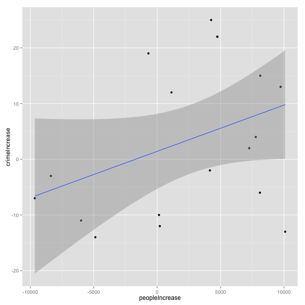
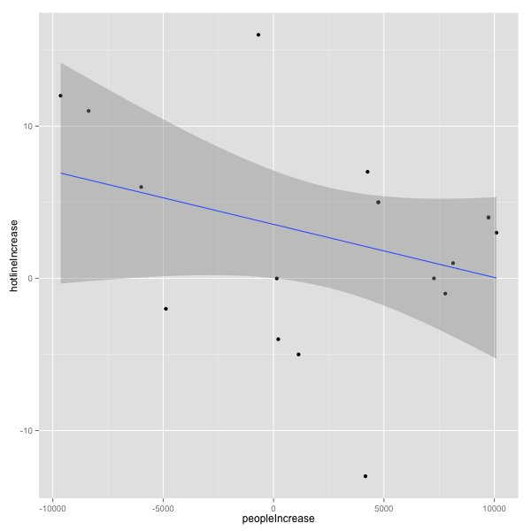

MBTA Late Night T Data Challenge
Exploring the effects of the Late Night T service on reported crime, emergency room visits and Mayor's hotline complaints.
Introduction
We decided to take an alternative approach, and instead of analyzing the ridership information and its changes after the late night T program was in effect, how good it was for the local businesses or how it affected the cab companies, we tried to measure the impact the increased number of people out and about at late hours was having (if any) into other things such as crime, incidents on the streets, emergency room visits, etc.
The Data
The data that we used to conduct our study was the T ridership (buses, cabs and trains) provided as part of this challenge, along with three other datasets we got our hands on:
- Reported crimes (from City of Boston's data portal)
- Emergency room visits (courtesy of the EMS service)
- Mayor's hotline calls (from City of Boston's data portal)
We used the ridership data as a proxy for the number of people out and about in a specific night. This number doesn't represent actual people out, but we used its increase with respect to 2013's figures (when there was no late night service) to correlate it to the other datasets and observe their relationships.
We joined the data of the external datasets with the ridership data, including just Fridays and Saturdays. Then, we assigned them ordinal numbers representing their position in the year, counting only Fridays and Saturdays (i.e.: 2013's first Friday was #1, the Saturday after that was #2, the following Friday #3... and so on). This allowed us to match "equivalent" Fridays from both years (for example, day #17 is a Friday around the same date in 2013 and 2014). Finally, we filtered out the days after the 2013 Boston Marathon. Because of the bombing, many people stayed in and it was a huge outlier (there were very few rides. This left us with 19 data points of the 19 Fridays and Saturdays for which we had data from 2013 without late night service and 2014 with late night service.
For a complete description of the data processing stage, check out our GitHub repo.
Results
After processing the data, we ran a linear regression algorithm with the relationships between the ridership data and the three datasets in our study. The graphs below show the increase or decrease of ridership for a specific day in 2014 compared to its equivalent in 2013, and the corresponding increase or decrease in crimes, emergencies or complaints:
Crimes reported vs. number of people out
The intercept for this linear regression is very close to 0 crimes, meaning that, other things aside, there were approximately the same number of crimes in these days in 2013 and 2014. The slope of the regression is possitive, meaning that we see more crimes reported the more the late night ridership is:
Emergency room visits vs. number of people out
The intercept for this linear regression is possitive, around 70 emergency visits more per day in 2014 compared to 2013, meaning that, other things aside, there was a possitive trend in emergency visits. Regardless, keeping everything else constant, the days with increased ridership show lower emergency room visits:

Mayor Hotline's complaints vs. number of people out
The intercept for this linear regression is possitive, around 4 hotline complaints more per day in 2014 compared to 2013, meaning that, other things aside, there was a possitive trend in complaints. Regardless, keeping everything else constant, the days with increased ridership show lower hotline complaints:
Conclusions
Ideally, we would have location data down to minutes, or even hours, for all datasets. This was not the case. The bus lines didn't have location data, the cab rides only had zipcode information for residential districts, the emergency visits were just the total number for the day... Instead, we had to aggregate data to the lowest common denominator: number of events per day. Also, the overlap of late night T service with equivalent periods the year before left us only with 20 data points: the 20 days of late night T service in the dataset.
Giving these limitations, we don't think we have a significant amount of data to draw any strong conclusions from this study. However, these graphs hint to a possible relationship between these variables, which might be interesting to explore in more depth, with more detailed datasets.